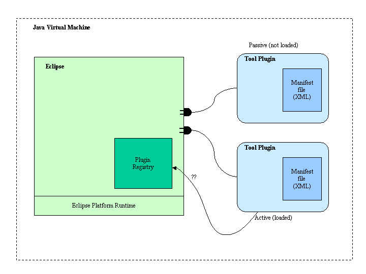
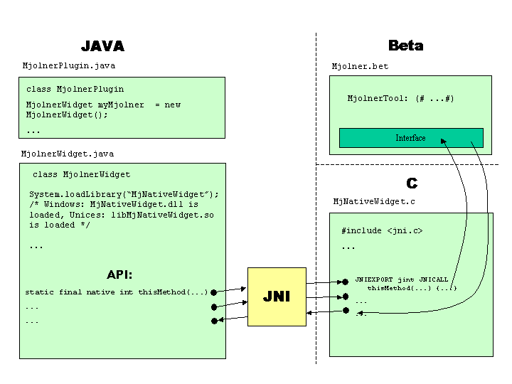

Denne side er et arbejdsnotat, der forsøger løbende at sammenfatte resultaterne af den tekniske undersøgelse af muligheder for at integrere MjølnerTool i Eclipse.
Hovedkilden til informationer er www.eclipse.org.
Det centrale i Eclipse er den såkaldte Workbench, som alt andet plugges ind i. Workbenchen består af views, editorer og perspektiver.
Ideen er, at basale ting som views og editorer kan udvides og specialiseres i forskellige plugins, og at disse kan arbejde sammen med hinanden v.h.a. Eclipse Framework.

I Eclipse defineres en række extension points. Plugins kan lave extensions til extension points, og de kan også selv definere nye extension points, som andre plugins så kan lave extensions til. Extensions, extension points og andre informationer vedrørende interfacet til en plugin bliver erklæret i dens tilhørende manifest-fil, "plugin.xml".
Ved opstart opbygges et registry over tilstedeværende plugins ud fra manifest-filerne. En plugin loades dynamisk, dvs. først når der er brug for den. Når plugin'en loades, bruger den plugin-registryet til at finde ud af hvilke extension points der er til rådighed og hvilke evt. extensions der måtte være til dens egne extension points.
Eclipse Workbench er skrevet i Java med henblik på platformsuafhængighed, og alle plugins skrives i Java. Hvordan integrerer man 10 tons platformsspecifik betakode i dette?
Læs mere i Eclipse Platform: Technical Overview (pdf)
Eclipse.org angiver 5 forskellige niveauer af integration, fra løs til tæt:
Læs mere i Levels of Integration
MEJ-posting og svar hertil på news.eclipse.org. Resume heraf:
Ide: kan det lade sig gøre at pakke MjølnerTool ind som "verdens største native widget"?

Læs mere i Creating Your Own Widgets using SWT
Artikel hos Javareference.com om SWT og JFace vs. AWK m.m. (uafhængig, positiv kommentar til Eclipses valg af SWT og JFace)
Kan man slippe uden om at skrive en wrapper i C? På nuværende tidspunkt kan Beta ikke compilere DLL'er, men hvis MjolnerTools forskellige dele kunne compileres til en DLL eller til en samling af mindre DLL'er, så kunne filen MjNativeWidget.c i figuren ovenfor undværes, og interfacet til Mjolner (som så kaldes direkte fra JNI) kunne skrives i Beta.
Lad os antage, at hele Mjolner linkes til én stor DLL (eller shared object library; i det flg. koncentrerer vi os om Windows-dll'er, men det virker forhåbentlig på samme måde på Unix). MjolnerTools forskellige dele compileres til mjolner.o, editor.o, freja.o osv., der sammen med betarun.o kan linkes sammen til en generel mjolner.dll. I forbindelse med Eclipse er vi ydermere interesseret i at have det Eclipse-specifikke interface til Mjolner, som ligger i MjolnerWidget.bet, så MjolnerWidget.o skal også linkes sammen med de andre .o-filer til, lad os kalde det: MjolnerWidget.dll.
MjolnerWidget.dll er så det library, som loades og kaldes v.h.a. JNI, og det indeholder hele Mjolner samt Eclipse's interface til Mjolner (kald det Mjolner-interfacet). Når Eclipse-brugeren starter beta-debuggeren, kaldes en funktion StartDebugger i Mjolner-interfacet. I MjolnerWidget.bet kunne den se således ud:
(*
jint = int32 *)
StartDebugger: External
(# name: [0]@char;
pid: @int32 (* jint *)
enter name
do cExternalEntry;
... [dopart-ting]
exit pid
#);
Udfordringen på Beta-siden bliver at sætte dette rigtigt sammen til MjolnerWidget.dll, så der heri bliver skabt:
Her skal tungen holdes lige i munden med mapning af JNI-typer til Beta-typer, f.eks. 'jint' til 'int32' i eksemplet. Betarun's rolle bliver at bidrage en overordnet initialisering af runtime-systemet i form af det almindelige dll-entrypoint DllMain(...). Heri sker så de sædvanlige procedurer fra Betarun: kald af initialize, kald af betarun, som igen kalder Program.
PA's links til DLL-informationer
JNI loader native code i samme proces som JVM'en og resten af Java-programmet (Eclipse). Dette kræver overvejelser ang. hvordan Betarun skal opføre sig, hvis man loader flere instanser af MjolnerTool - hvis man overhovedet skal kunne dette.
Se den til formålet indkøbte bog af Sheng Liang: "The Java Native Interface. Programmer's Guide and Specification" i Mjølners bibliotek.